Giorgio Giannone
CV
/
Email
/
GitHub
/
LinkedIn /
Scholar
I am a Principal Research Scientist on the AI Innovation Team at Red
Hat in Boston,
where I lead research on Probabilistic Inference Methods for Foundation Models.
In collaboration with the Core AI Team at IBM, I develop Context Optimization
algorithms to improve the reliability and cost efficiency of enterprise-scale
AgentOps.
I also hold an appointment as a Research Affiliate with the DeCoDE
Lab at MIT MechE,
where I contribute to research on Constrained Generative Models for AI-Driven
Design and Program Synthesis.
Previously, I was an Applied Scientist at Amazon in Seattle, where I worked on
grounding Vision-Language Models in product-centric contexts
and enhancing the fidelity of Subject-Driven Text-to-Image Synthesis.
I completed my PhD at the Technical
University of Denmark (DTU), supervised by Ole Winther
and Søren
Hauberg.
During my PhD, I was a visiting researcher at MIT
School of Engineering
and UCL Centre for Artificial Intelligence,
collaborated with the MIT-IBM AI Lab,
and interned at Microsoft Research (Cambridge, MA),
IBM
Research (Zurich, CH),
and Amazon Science (Cambridge and London,
UK).
Research
I am a researcher and engineer working on Generative AI and
Probabilistic Methods,
with a focus on Inference-Time Scaling, Test-Time Adaptation, Vision-Language
Alignment, and Conditional
Diffusion Models.
I am interested in the generalization and adaptation capabilities of
hierarchical generative models, with a focus on feedback-driven self-training
and vision-language alignment. I aim to bridge the gap between large and small
generative models by leveraging probabilistic inference techniques and bayesian
methods.
Publications
selected
|
all
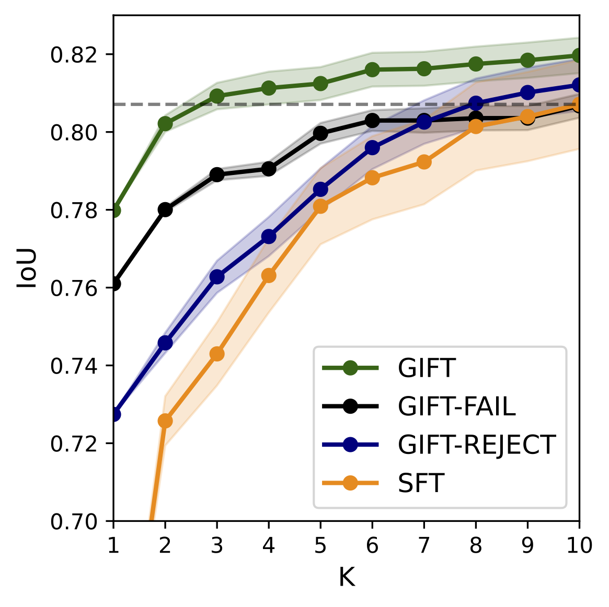
GIFT: Bootstrapping Image-to-CAD Program Synthesis via Geometric Feedback
Giorgio Giannone, Annie Clare Doris, Amin Heyrani Nobari, Kai Xu, Akash Srivastava, Faez Ahmed
Under Review, 2026
Mapping images to executable CAD programs is a central challenge in generative design, yet aligning visual inputs with symbolic code remains difficult. Existing approaches typically rely on brittle supervised fine-tuning or costly online reinforcement learning to overcome data limitations. In this work, we ask: how far can we push performance by leveraging test-time compute to bootstrap an augmented training set? We identify the primary bottleneck as the scarcity of diverse data aligning visual geometry with program syntax, rather than model capacity. To address this, we introduce Geometric Inference Feedback Tuning (GIFT), a framework that uses geometric feedback to generate high-quality data augmentations. GIFT systematically analyzes model failures via inference-time scaling, verifying geometric accuracy with a CAD kernel.
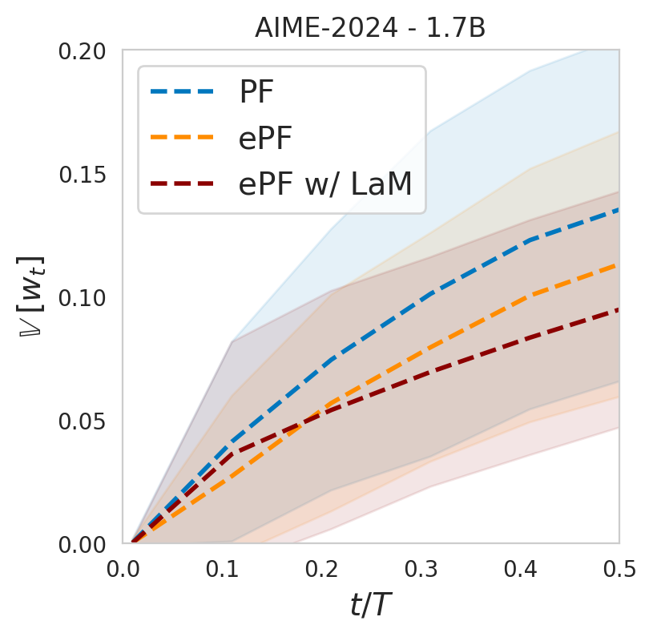
Mitigating Premature Exploitation in Particle-based Monte Carlo
for Inference-Time Scaling
Giorgio Giannone,
Guangxuan Xu,
Nikhil
Shivakumar Nayak,
Rohan Mahesh Awhad,
Shivchander
Sudalairaj,
Kai Xu,
Akash Srivastava
Under Review, 2025
Inference-Time Scaling (ITS) improves language models by allocating more computation at generation time. Particle Filtering (PF) has emerged as a strong ITS method for complex mathematical reasoning tasks, but it is vulnerable when guided by process reward models, which often assign overconfident scores early in the reasoning process. This causes PF to suffer from premature exploitation: it myopically commits to locally promising trajectories, prunes potentially correct hypotheses, and converges to suboptimal solutions. This failure mode, known as particle impoverishment, is especially severe under constrained computational budgets. To address this, we analyze the problem and identify two root causes: a lack of diversity in the particle set due to overconfident resampling and consequent inability to assess the potential of a reasoning path. We introduce Entropic Particle Filtering (ePF), an algorithm that integrates two new techniques to solve these issues.
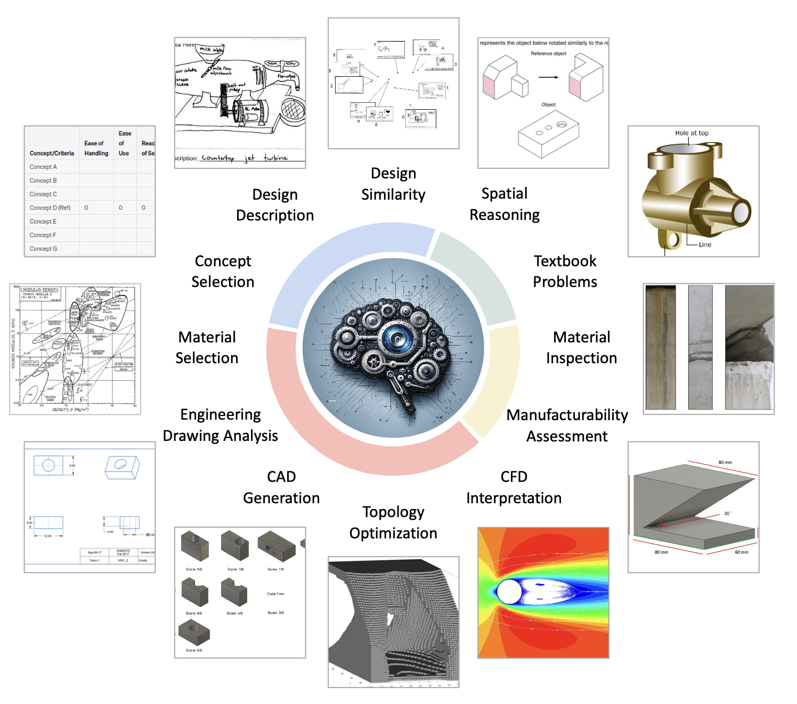
From Concept to Manufacturing: Evaluating Vision-Language Models
for Engineering Design [talk]
Cyril Picard*,
Kristen M. Edwards*,
Anna C. Doris,
Brandon Man,
Giorgio Giannone,
Md Ferdous Alam,
Faez Ahmed
Artificial Intelligence Review, 2025
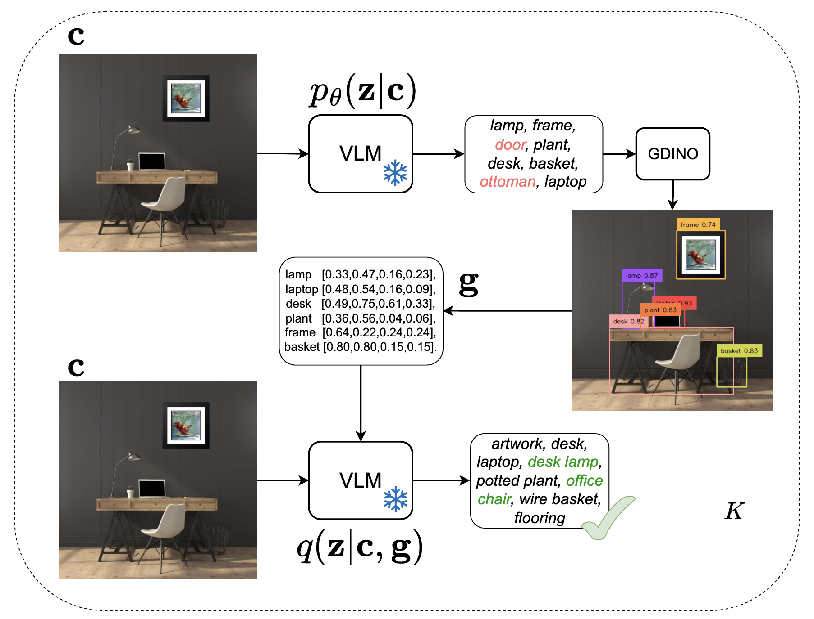
Feedback-Driven Vision-Language Alignment with Minimal Human
Supervision
Giorgio Giannone,
Ruoteng Li,
Qianli
Feng,
Yev Perevodchikov,
Rui
Chen,
Aleix Martinez
Under Review, 2025
Vision-language models (VLMs) have demonstrated remarkable potential in integrating visual and linguistic information, but their performance is often constrained by the need for extensive, high-quality image-text training data. Curation of these image-text pairs is both time-consuming and computationally expensive. To address this challenge, we introduce SVP (Supervision-free Visual Projection), a novel framework that enhances vision-language alignment without relying on curated data or preference annotation. SVP leverages self-captioning and a pre-trained grounding model as a feedback mechanism to elicit latent information in VLMs.
Be More Specific: Evaluating Object-centric Realism in Synthetic
Images
Anqi
Liang,
Ciprian Corneanu,
Qianli
Feng,
Giorgio Giannone,
Aleix Martinez
Conference on Computer Vision and Pattern Recognition, CVPR, 2025
Evaluation of synthetic images is important for both model development and selection. An ideal evaluation should be specific, accurate and aligned with human perception. This paper addresses the problem of evaluating realism of objects in synthetic images. Although methods has been proposed to evaluate holistic realism, there are no methods tailored towards object-centric realism evaluation. In this work, we define a new standard for assessing object-centric realism that follows a shape-texture breakdown and proposes the first object-centric realism evaluation dataset for synthetic images. The dataset contains images generated from state-of-the-art image generative models and is richly annotated at object level across a diverse set of object categories. We then design and train the OLIP model, a dedicated architecture that considerably outperforms any existing baseline on object-centric realism evaluation.
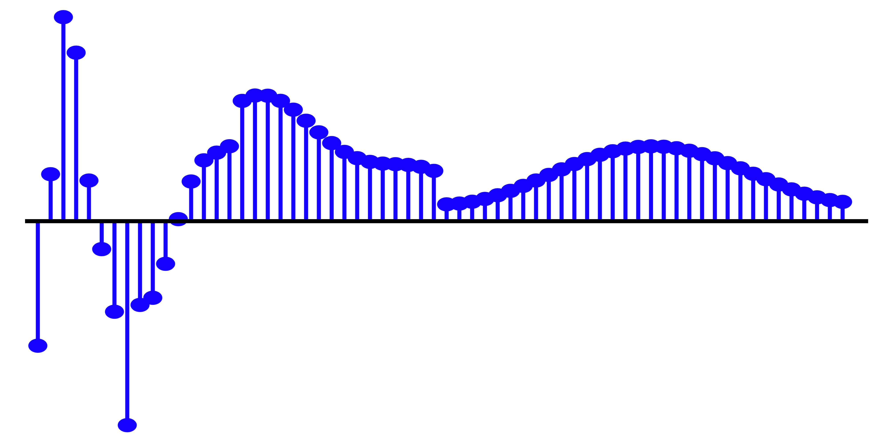
Reparameterized Multi-Resolution Convolutions for Long Sequence
Modelling
Harry Jake
Cunningham,
Giorgio Giannone,
Mingtian Zhang,
Marc Deisenroth
Neural Information Processing Systems,
NeurIPS, 2024
Global convolutions have shown increasing promise as powerful general-purpose sequence models. However, training long convolutions is challenging, and kernel parameterizations must be able to learn long-range dependencies without overfitting. This work introduces reparameterized multi-resolution convolutions (MRConv), a novel approach to parameterizing global convolutional kernels for long-sequence modeling. By leveraging multi-resolution convolutions, incorporating structural reparameterization and introducing learnable kernel decay, MRConv learns expressive long-range kernels that perform well across various data modalities.
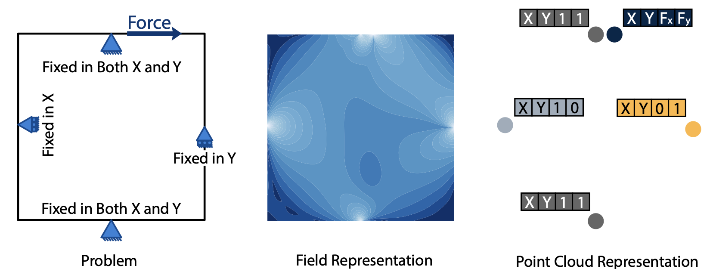
NITO: Neural Implicit Fields for Resolution-free Topology
Optimization
Amin Heyrani Nobari,
Lyle Regenwetter,
Giorgio Giannone,
Faez
Ahmed
Transactions on Machine Learning Research, TMLR, 2025
Topology optimization is a critical task in engineering design, where the goal is to optimally distribute material in a given space for maximum performance. We introduce Neural Implicit Topology Optimization (NITO), a novel approach to accelerate topology optimization problems using deep learning. NITO stands out as one of the first frameworks to offer a resolution-free and domain-agnostic solution in deep learning-based topology optimization. NITO synthesizes structures with up to seven times better structural efficiency compared to SOTA diffusion models and does so in a tenth of the time. In the NITO framework, we introduce a novel method, the Boundary Point Order-Invariant MLP (BPOM), to represent boundary conditions in a sparse and domain-agnostic manner, moving away from expensive simulation-based approaches.
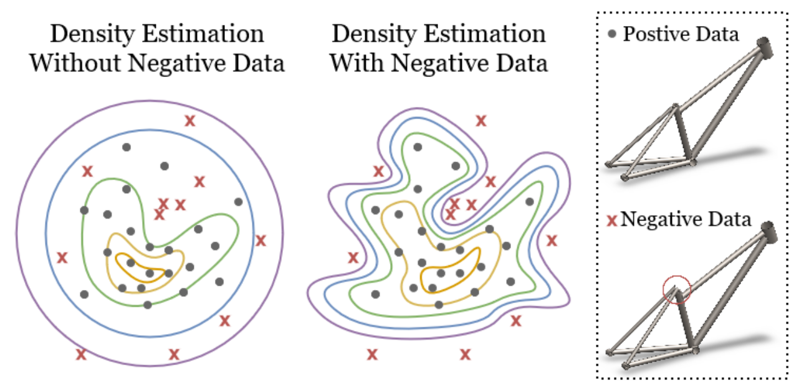
Constraining Generative Models for Engineering Design with Negative Data
Lyle Regenwetter, Giorgio Giannone, Akash Srivastava, Dan Gutfreund, Faez Ahmed
Transactions on Machine Learning Research, TMLR, 2024
Generative models have recently achieved remarkable success and widespread adoption in society, yet they still often struggle to generate realistic and accurate outputs. This challenge extends beyond language and vision into fields like engineering design, where safety-critical engineering standards and non-negotiable physical laws tightly constrain what outputs are considered acceptable. In this work, we introduce two approaches to guide models toward constraint-satisfying outputs using negative data -- examples of what to avoid.
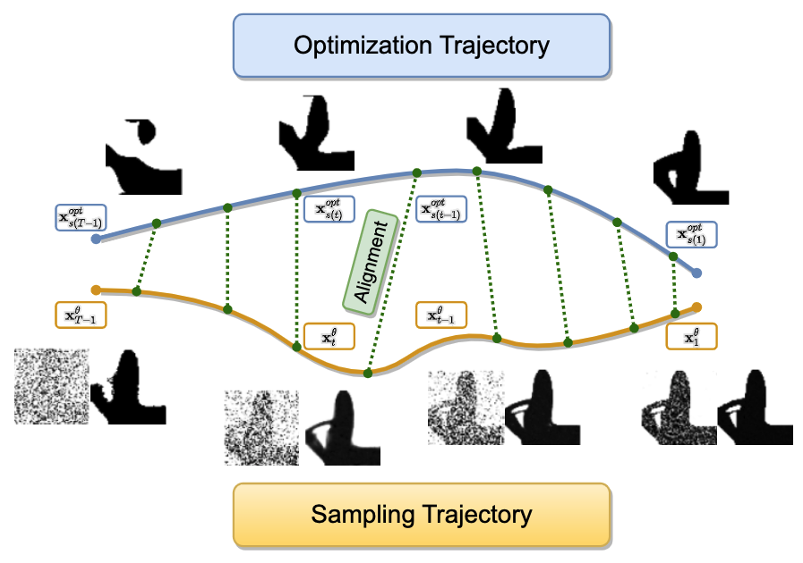
Aligning Optimization Trajectories with Diffusion Models for
Constrained Design Generation
Giorgio Giannone,
Akash Srivastava,
Ole Winther,
Faez
Ahmed
Neural Information Processing Systems, NeurIPS, 2023
Generative models have had a profound impact on vision and language, paving the way for a new era of multimodal generative applications. While these successes have inspired researchers to explore using generative models in science and engineering to accelerate the design process and reduce the reliance on iterative optimization, challenges remain. Specifically, engineering optimization methods based on physics still outperform generative models when dealing with constrained environments where data is scarce and precision is paramount. To address these challenges, we introduce Diffusion Optimization Models (DOM) and Trajectory Alignment (TA), a learning framework that demonstrates the efficacy of aligning the sampling trajectory of diffusion models with the optimization trajectory derived from traditional physics-based methods.
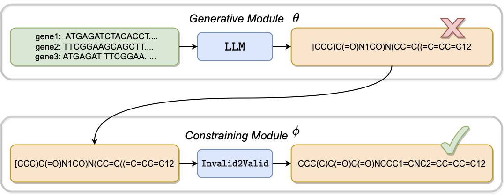
Improving Precision in Language Models Learning from Invalid
Samples
Niels Jakob Larsen*,
Giorgio Giannone*,
Ole Winther,
Kai
Blin
Generative AI and Biology Workshop, NeurIPS, 2023
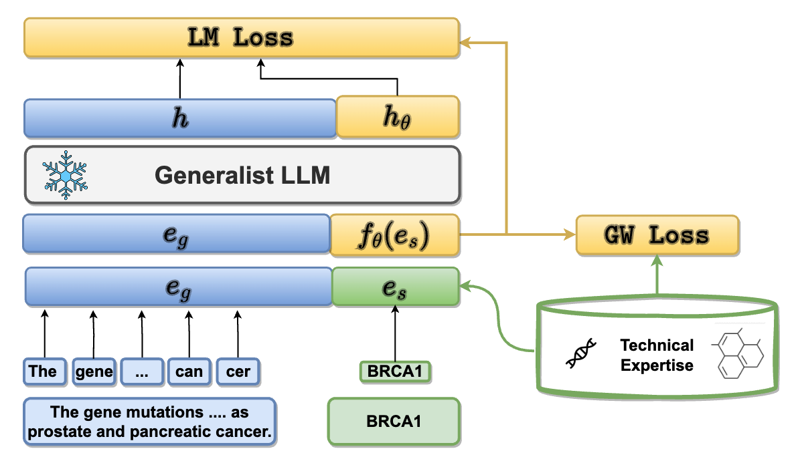
Enhancing Language Models for Technical Domains with Dynamic
Token Injection
Giorgio Giannone,
Neil Tenenholtz,
James Hall,
Nicolo Fusi,
David Alvarez-Melis
Generative AI and Biology Workshop, NeurIPS, 2023
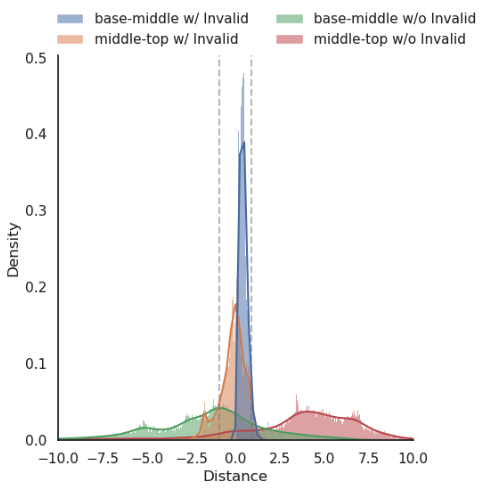
Learning from Invalid Data: On Constraint Satisfaction in
Generative Models
Giorgio Giannone*,
Lyle Regenwetter*,
Akash Srivastava*,
Dan
Gutfreund,
Faez
Ahmed
Diffusion Models Workshop, NeurIPS, 2023
Generative models have demonstrated impressive results in vision, language, and speech. However, even with massive datasets, they struggle with precision, generating physically invalid or factually incorrect data. This is particularly problematic when the generated data must satisfy constraints, for example, to meet product specifications in engineering design or to adhere to the laws of physics in a natural scene. To improve precision while preserving diversity and fidelity, we propose a novel training mechanism that leverages datasets of constraint-violating data points, which we consider invalid.
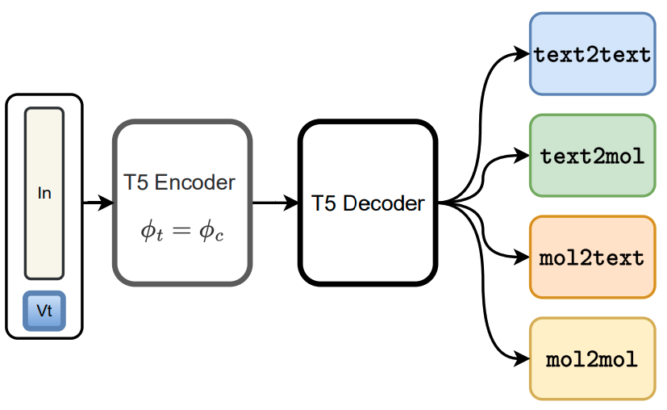
Unifying Molecular and Textual Representations via Multi-task
Language Modelling
Dimitrios Christofidellis*,
Giorgio Giannone*,
Jannis
Born,
Ole Winther,
Teodoro
Laino,
Matteo
Manica
International Conference on Machine Learning, ICML, 2023
The recent advances in neural language models have also been successfully applied to the field of chemistry, offering generative solutions for classical problems in molecular design and synthesis planning. These new methods have the potential to optimize laboratory operations and fuel a new era of data-driven automation in scientific discovery. However, specialized models are still typically required for each task, leading to the need for problem-specific fine-tuning and neglecting task interrelations. Here, we propose a multi-domain, multi-task language model to solve a wide range of tasks in both the chemical and natural language domains. By leveraging multi-task learning, our model can handle chemical and natural language concurrently, without requiring expensive pre-training on single domains or task-specific models.
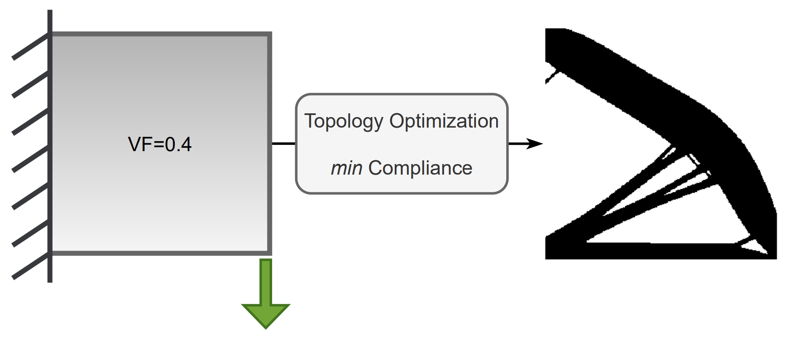
Diffusing the Optimal Topology: A Generative Optimization
Approach
Giorgio Giannone,
Faez
Ahmed
International Design Engineering Technical Conferences, IDETC, 2023
Topology Optimization seeks to find the best design that satisfies a set of constraints while maximizing system performance. Traditional iterative optimization methods like SIMP can be computationally expensive and get stuck in local minima, limiting their applicability to complex or large-scale problems. Recently, deep generative models, such as Generative Adversarial Networks and Diffusion Models, conditioned on constraints and physics fields have shown promise, but they require extensive pre-processing and surrogate models for improving performance. To address these issues, we propose a Generative Optimization method that integrates classic optimization like SIMP as a refining mechanism for the topology generated by a deep generative model.
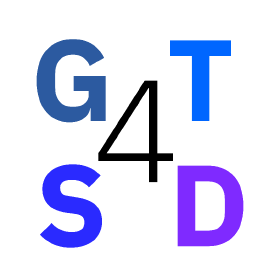
Accelerating material design with the generative toolkit for
scientific discovery
Manica & the GT4SD
Team (Core Contributor)
Nature npj Computational Materials, 2023
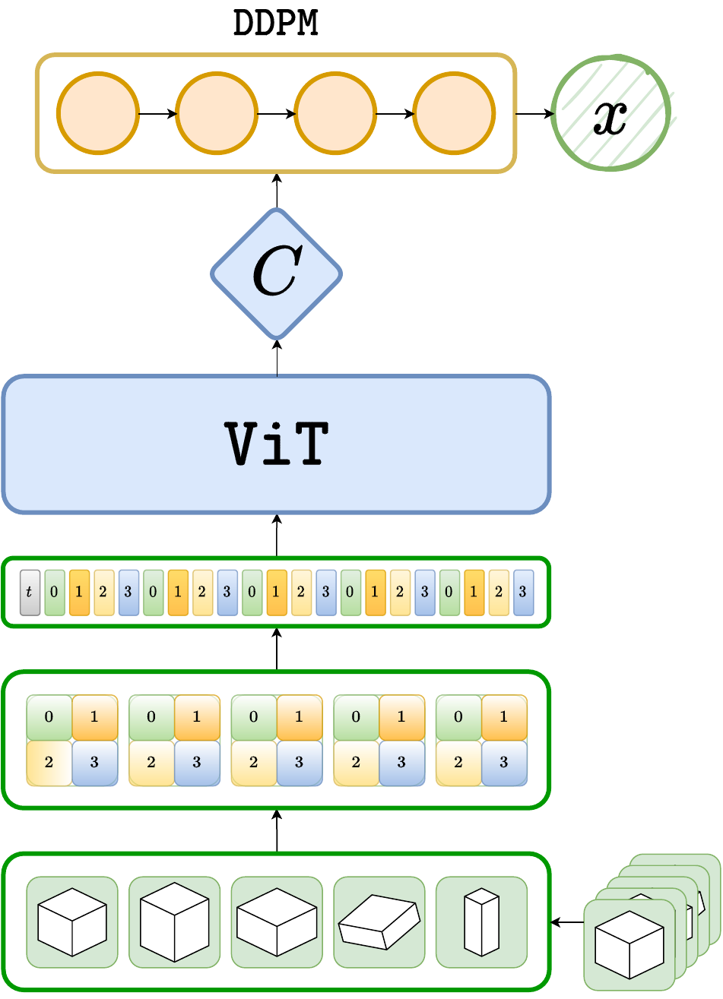
Few-Shot Diffusion Models
Giorgio Giannone,
Didrik Nielsen,
Ole Winther
Score-Based Methods Workshop, NeurIPS, 2022
Denoising diffusion probabilistic models (DDPM) are powerful hierarchical latent variable models with remarkable sample generation quality and training stability. These properties can be attributed to parameter sharing in the generative hierarchy, as well as a parameter-free diffusion-based inference procedure. In this paper, we present Few-Shot Diffusion Models (FSDM), a framework for few-shot generation leveraging conditional DDPMs. FSDMs are trained to adapt the generative process conditioned on a small set of images from a given class by aggregating image patch information using a set-based Vision Transformer (ViT). At test time, the model is able to generate samples from previously unseen classes conditioned on as few as 5 samples from that class. We empirically show that FSDM can perform few-shot generation and transfer to new datasets taking full advantage of the conditional DDPM.
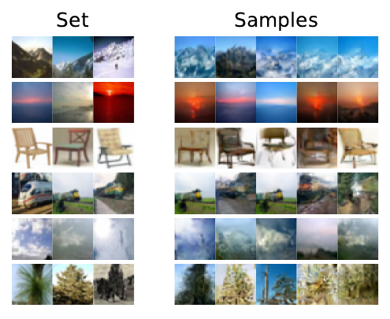
SCHA-VAE: Hierarchical Context Aggregation for
Few-Shot Generation
Giorgio Giannone,
Ole Winther
International Conference on Machine Learning, ICML, 2022
A few-shot generative model should be able to generate data from a novel distribution by only observing a limited set of examples. In few-shot learning the model is trained on data from many sets from distributions sharing some underlying properties such as sets of characters from different alphabets or objects from different categories. We extend current latent variable models for sets to a fully hierarchical approach with an attention-based point to set-level aggregation and call our method SCHA-VAE for Set-Context-Hierarchical-Aggregation Variational Autoencoder. We explore likelihood-based model comparison, iterative data sampling, and adaptation-free out-of-distribution generalization.
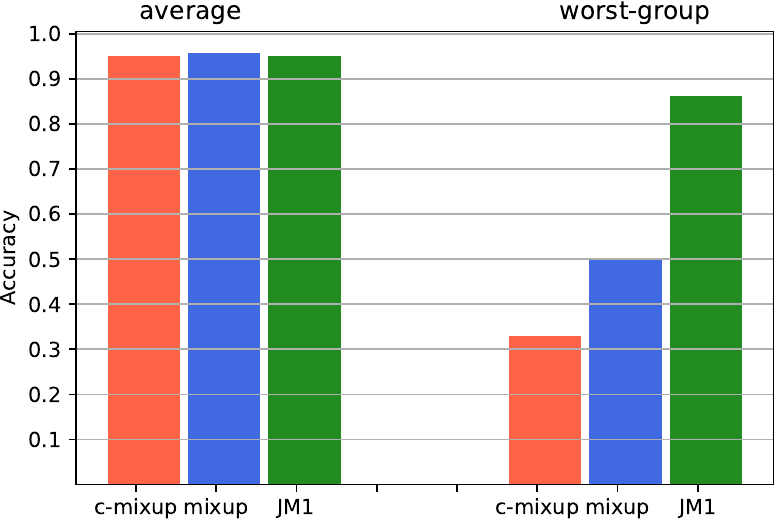
Just Mix Once: Worst-group Generalization by Group
Interpolation
Giorgio Giannone,
Serhii
Havrylov,
Jordan Massiah,
Emine
Yilmaz,
Yunlong Jiao
Distribution Shifts Workshop, NeurIPS, 2021
Advances in deep learning theory have revealed how average generalization relies on superficial patterns in data. The consequences are brittle models with poor performance with shift in group distribution at test time. When group annotation is available, we can use robust optimization tools to tackle the problem. However, identification and annotation are time-consuming, especially on large datasets. A recent line of work leverages self-supervision and oversampling to improve generalization on minority groups without group annotation. We propose to unify and generalize these approaches using a class-conditional variant of mixup tailored for worst-group generalization. Our approach, Just Mix Once (JM1), interpolates samples during learning, augmenting the training distribution with a continuous mixture of groups.
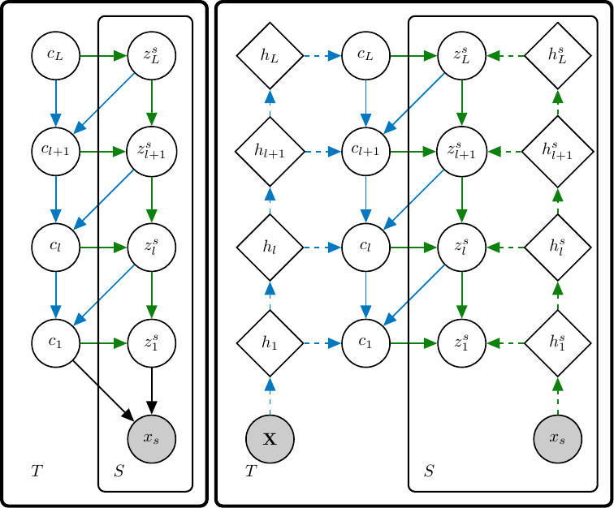
Hierarchical Few-Shot Generative Models
Giorgio Giannone,
Ole Winther
Meta-Learning Workshop, NeurIPS, 2021
A few-shot generative model should be able to generate data from a distribution by only observing a limited set of examples. In few-shot learning the model is trained on data from many sets from different distributions sharing some underlying properties such as sets of characters from different alphabets or sets of images of different type objects. We study a latent variables approach that extends the Neural Statistician to a fully hierarchical approach with an attention-based point to set-level aggregation. We extend the previous work to iterative data sampling, likelihood-based model comparison, and adaptation-free out of distribution generalization.
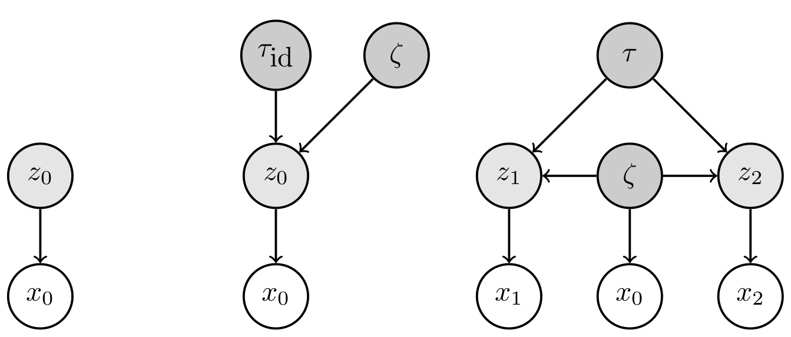
Transformation-aware Variational Autoencoder
Giorgio Giannone,
Saeed
Saremi,
Jonathan Masci,
Christian Osendorfer
Technical Report, 2020
We extend the framework of variational autoencoders to represent transformations explicitly in the latent space. This is achieved in the form of a generative model structured such that the group of transformations that act in the input space is instead represented by latent variables which are linear operators that only act in the latent space. In the family of hierarchical graphical models that emerges, the latent space is populated by higher order objects which are inferred jointly with the latent representations they act on.
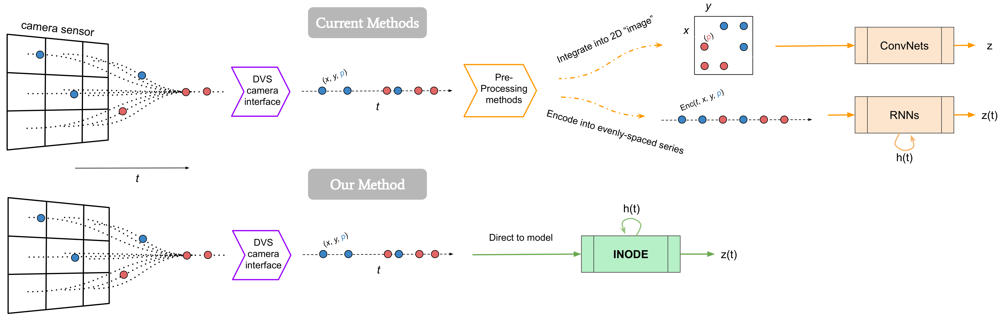
Real-time Classification from Short Event-Camera Streams using
Input-filtering Neural ODEs
Giorgio Giannone,
Asha Anoosheh,
Alessio Quaglino,
Pierluca D'Oro,
Marco
Gallieri,
Jonathan Masci
Interpretable Inductive Biases
and Physically Structured Learning Workshop, NeurIPS, 2020
Event-based cameras are novel, efficient sensors inspired by the human vision system, generating an asynchronous, pixel-wise stream of data. Learning from such data is generally performed through heavy preprocessing and event integration into images. This requires buffering of possibly long sequences and can limit the response time of the inference system. In this work, we instead propose to directly use events from a DVS camera, a stream of intensity changes and their spatial coordinates. This sequence is used as the input for a novel asynchronous RNN-like architecture, the Input-filtering Neural ODEs.
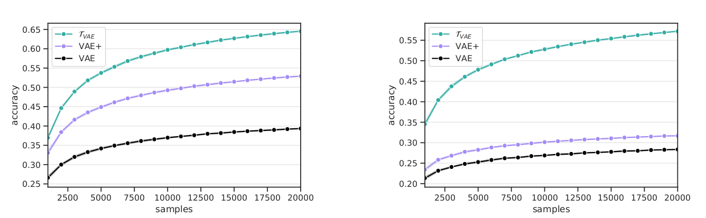
No Representation without Transformation
Giorgio Giannone,
Jonathan Masci,
Christian Osendorfer
Bayesian Deep Learning and Perception as Generative Reasoning Workshops,
NeurIPS , 2019
We propose to extend Latent Variable Models with a simple idea: learn to encode not only samples but also transformations of such samples. This means that the latent space is not only populated by embeddings but also by higher order objects that map between these embeddings. We show how a hierarchical graphical model can be utilized to enforce desirable algebraic properties of such latent mappings.
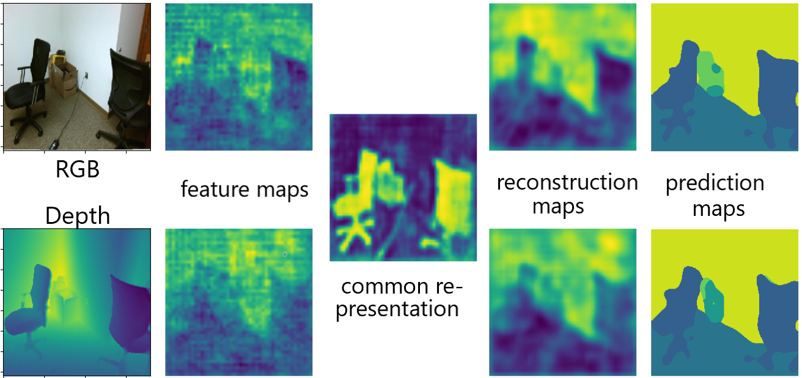
Learning Common Representation from RGB and Depth Images
Giorgio Giannone,
Boris Chidlovskii
Multimodal Learning and Applications Workshop, CVPR, 2019
We propose a new deep learning architecture for the tasks of semantic segmentation and depth prediction from RGB-D images. We revise the state of art based on the RGB and depth feature fusion, where both modalities are assumed to be available at train and test time. We propose a new architecture where the feature fusion is replaced with a common deep representation. Combined with an encoder-decoder type of the network, the architecture can jointly learn models for semantic segmentation and depth estimation based on their common representation.
Projects
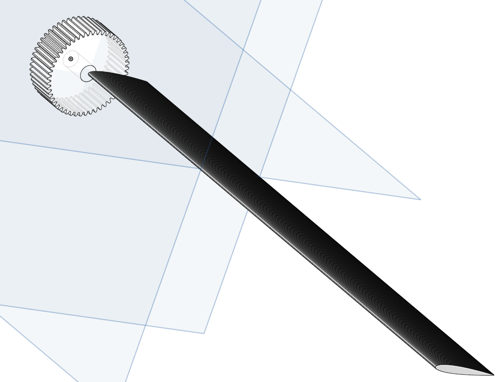
Text2CAD: Democratizing Engineering Design. Prompt by Prompt.
DesignX Team, 2023
I co-led a team of engineers and researchers based at MIT and Caltech. We have developed a generative tool that allows users to create CAD models using natural language prompts. Our aim is to revolutionize CAD software by reimagining engineering design for the next generation of inventors. The tool is designed to be user-friendly and accessible to non-experts, enabling a wide range of users to quickly create complex CAD models without the need for specialized training.
GAiA: Chatbots to enhance Workplace Communication
GAiA Team, 2017-2019
Co-founder. Chosen from over 100 startups to join the EnLabs Incubator. Developed platform-agnostic (outlook, slack, telegram) language assistants (chatbots) designed to streamline enterprise workflows, such as scheduling large meetings across distributed teams and automating routine inquiries.
Open-source
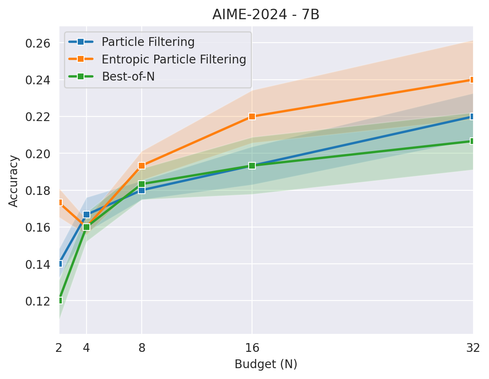
its-hub: A Python library for inference-time scaling
AI Innovation Team, Red Hat AI, 2025
its_hub is a Python library for inference-time scaling of LLMs that provides multiple scaling algorithms (Particle Filtering, Best-of-N, Beam Search, Self-Consistency), an OpenAI-compatible API with Inference-as-a-Service (IaaS), Async generation with concurrency limits and error handling and comprehensive benchmarking tools.
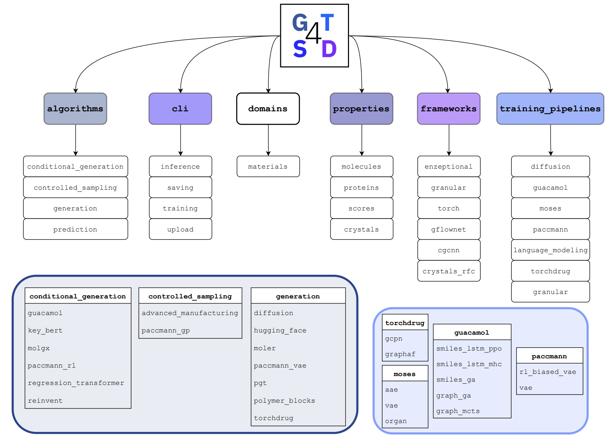
GT4SD: Generative Toolkit for Scientific Discovery
GT4SD Team, 2022
The GT4SD (Generative Toolkit for Scientific Discovery) is an open-source platform to accelerate hypothesis generation in the scientific discovery process. It provides a library for making state-of-the-art generative AI models easier to use.
Datasets
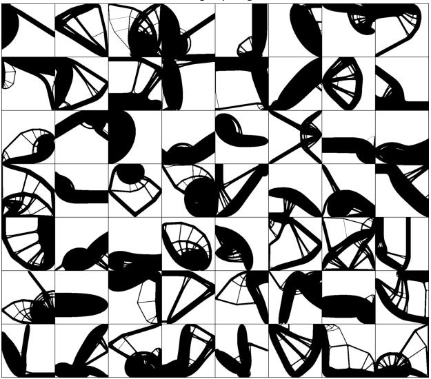
2d Topology Optimization
We built a dataset of optimized topologies and intermediate optimization steps at low-resolution (64x64) and high-resolution (256x256) with constraints.
- 50K low-resolution optimized topologies.
- 60K high-resolution optimizer topologies.
- 250K low-resolution intermediate steps.
- 300K high-resolution intermediate steps.
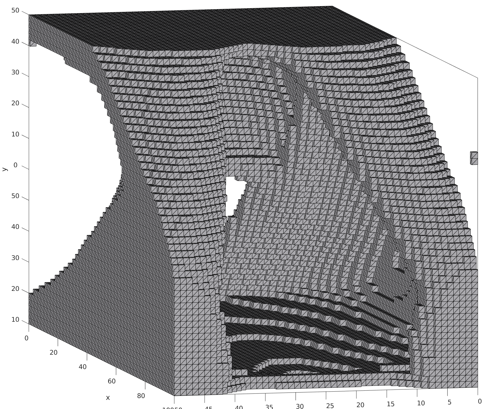
3d Topology Optimization
We built a multifidelity dataset of 300K optimized topologies with constraints.
- 150K beams.
- 100K plates.
- 50K l-shapes.
Teaching
-
Course 02456 Deep learning
(Fall 2020) -
Course 02477 Bayesian Machine Learning
(Spring 2021) -
Course 02460 Advanced Machine Learning
(Spring 2022) -
Course 02456 Deep learning
(Fall 2022)
Patents
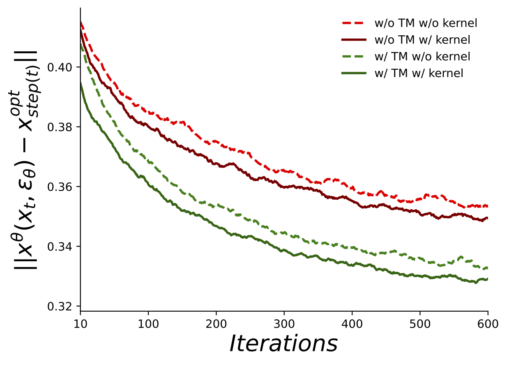
Generative optimization models for machine learning
Inventors: Giorgio Giannone (MIT), Akash Srivastava (IBM), Faez
Ahmed (MIT)
US Patent US20250292092A1, 2025
Method and apparatus for semantic segmentation and depth
completion using a convolutional neural network
Inventors: Boris Chidlovskii (NAVER),
Giorgio Giannone (NAVER)
US Patent US11263756B2, 2022
Theses

Few-Shot Generative Models: Learning Generative Models with
Limited
Data
Giorgio Giannone
PhD's Thesis, Machine Learning, Technical University of Denmark, 2023
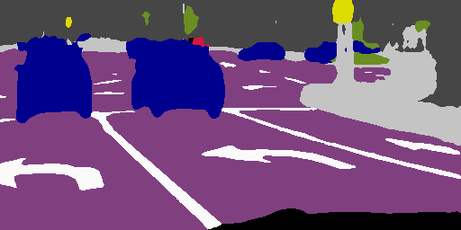
Learning Common Representation for Scene Understanding
Giorgio Giannone
Master's Thesis, Data Science, Sapienza University of Rome, 2018
Bubble Dynamics in Turbulent Shear Flows
Giorgio Giannone
Master's Thesis, Mechanical Engineering, Sapienza University of Rome, 2016